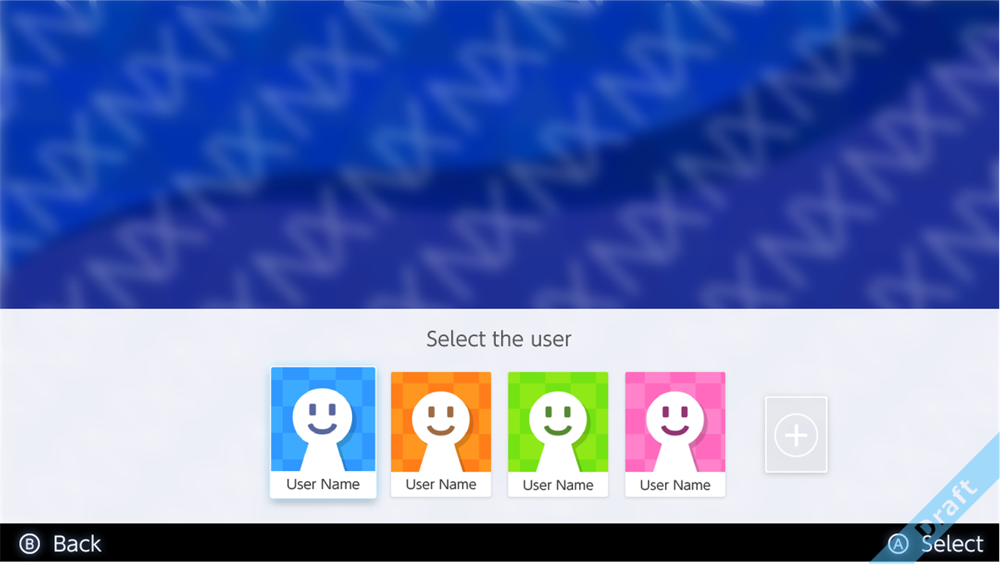
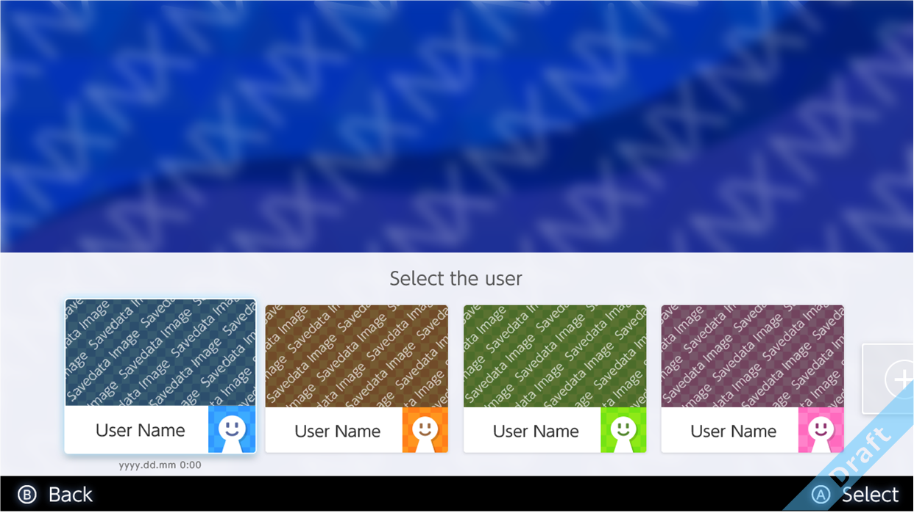

The account management applet supports selecting users inside the application and the following other account features.
The following two types of display patterns have been prepared to show when a user is being selected. Registered users are displayed.


For more information about this applet, see Application Support for Accounts within the Account Guide.
CONFIDENTIAL